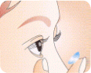

- HOME
- 콘텍트렌즈
드림렌즈
국내에서 주로 드림렌즈(Advanced Orthokeratology lens)라고 불리는 특수 콘택트렌즈는 잠잘 때 착용하면 시력교정의 효과를 볼 수 있어 낮 동안 안경 없이 생활할 수 있는 렌즈입니다.
-
드림렌즈 시술과정
- 시술 과정
-
step1 철저한 안과적 정밀검사 현미경 검사, 각막 지형도검사, 각막 만고도 검사 등의 안과적 정밀검사를 통해 시술이 적합한지 알아봅니다.step2 1시간 정도 시험렌즈 착용 후 관찰 step3 모든 검사의 데이터를 바탕으로 렌즈를 주문, 제작합니다. step4 드림렌즈 착용
- 드림렌즈의 장점
-
- - 수술하지 않고도 근시, 난시를 효과적으로 교정할 수 있습니다.
- 근시의 진행을 억제하기 때문에 성장기 어린이나 청소년에게 효과적입니다.
- 착용하고 자는 렌즈이기 때문에 다른 렌즈에 비해 적응이 쉽고 편안 합니다.
- 착용 도중 부작용이 있거나 만족하지 못할 경우 시술을 중단하면 원래의 상태로 돌아가기 때문에 안전합니다.
- 잠잘 때만 착용하므로 착용감이 편하고 어린이의 경우 부모의 도움으로 시술이 가능합니다.
- 빠른 시일 내에 시력 호전을 느낄 수 있습니다.
- 렌즈 분실의 위험이 적고 마모될 확률이 적어 렌즈의 수명이 오래갑니다.
- - 수술하지 않고도 근시, 난시를 효과적으로 교정할 수 있습니다.
-
드림렌즈 착용 대상
- 이 시술을 병원의 지시와 스케줄 등에만 잘 따르면 누구나 쉽게 시력교정을 할 수 있는 안전한 시술이라고 할 수 있습니다.
-
검사방법 : 기능검사, 안구 촬영등
- 드림렌즈 착용 대상
-
- - 경,중도 근시, 난시를 가진 분들
- 연령 제한이 없으며 초등학생에게서 더욱 효과가 우수합니다.
- 중등도 이하의 근시, 난시인 사람에게 효과가 탁월합니다.
- 원추각막이나 안과적 병리가 없는 건강한 눈을 가진 분들
- 시력교정수술에 대한 두려움과 비용 때문에 망설이는 분들
- 기존의 콘택트렌즈로 인한 합병증으로 고생하신 분들
- 근시 진행이 지속되는 학생
- 안경을 착용할 수 없는 특수직업(연예인, 운동선수, 조종사, 소방관, 승무원)등에게 적합합니다.
- - 경,중도 근시, 난시를 가진 분들
-
유의사항
- 드림렌즈 유의사항 숙지!
-
- 병원을 떠나기 전, 렌즈를 끼고 빼는 방법을 충분히 연습합니다.
- 렌즈 세척 용품들의 사용 목적과 효과에 대해 정확하게 숙지해야 합니다.
- 아침에 렌즈를 뺄 때는 인공누액을 충분히 점안해 렌즈가 자연스럽게 움직이는 상태에서 빼야 안전합니다.
- 렌즈 세척은 하루에 한번은 꼭 해주셔야 합니다.
- 병원에서 지시하는 정기 검진일에 철저히 따라야 합니다.
- 코멘트
-
- 해오름 안과에서는 최선을 다해 고객님의 눈에 광명을 다시 찾아드리겠습니다. 번쩍번쩍! 반짝반짝!
- HOME
- 콘텍트렌즈
소프트렌즈
소프트렌즈는 말 그대로 촉감이 부드럽고 매우 유연한 렌즈입니다. 구성재질은 하이드로겔(hydrogel)렌즈인데 겔이라는 구조는 액체를 흡수하는 고체와 액체의 중간상태인 구조입니다.
-
소프트렌즈 착용법
소프트렌즈 착용 순서
-
step1 렌즈를 깨끗이 세척하여 앞뒤를 구별한 후 두번째 손까락 위에 올려놓습니다. step2 눈동자는 바로 앞의 렌즈를 응시하고 같은 손의 세번재 손가락으로 아래 눈꺼풀을 잡아당깁니다.  step3 눈은 렌즈보다 위쪽을 바라보고 렌즈를 조심스럽게 흰자위에 올려 놓으면서 아래 눈꺼풀을 놓습니다. step4 눈을 가볍게 감고 눈동자를 조금씩 움직여 주면 렌즈가 제자리에 위치합니다.
- 소프트렌즈에 적합한 사람
-
- - 평소에 안경을 착용하다가 잠깐씩 렌즈를 착용하고자 하는 사람
- - 스포츠 레저를 위해 취미로 하는 사람
- - 하드렌즈를 적응 못하는 사람
- - 안구 건조증이 없는 사람
-
소프트렌즈의 종류
- 종류
-
매일착용렌즈:
매일 관리 해 주므로 소프트렌즈에 가장 큰 문제인 저산소증과 감염에 대한 위험을 낮출 수 있습니다.일회용렌즈(Disposable) :
렌즈에 침전물이 많이 형성되는 단계까지 착용하지 않고 하루에 한번씩 착용하고 버리는 렌즈입니다. 앨러지나 감염의 위험성이 비교적 적은편이며 다른 착용법에 비해 관리비용이나 세척 소독 이 필요 없습니다. 단점으로는 1년단위로 계산했을 경우 비용이 많이 소요되며 굴절력이나 여러 가지 변수가 제한적입니다연속착용렌즈(Extended Lens) :
하루 이상 착용하는 렌즈로 소프트렌즈에 가장 큰 문제점인 저산소증과 신생혈관, 거대유 두결막염 등에 대한 위험이 가장 높은 렌즈입니다. 렌즈의 취급능력이 부족하지만 렌즈를 꼭 착용해야 할 경우, 병원에서 치료용으로 처방 할 경우가 아니라면 가장 삼가 해야 할 착용법입니다.
- 라섹수술의 대상
-
- - 라식 수술에 다소 어려움이 있었던 환자가 주 대상이나 모든 근시, 난시, 원시도 가능
- (도수에 비해)각막 두께가 얇은 경우
- (각막 두께에 비해)도수가 높은 경우
- 권투 선수, 격투기 선수 등의 눈을 다칠 확률이 높은 분
- 라식 수술을 받기에 눈이 작은 분
- - 라식 수술에 다소 어려움이 있었던 환자가 주 대상이나 모든 근시, 난시, 원시도 가능
-
라섹수술관련Q&A
- 자주 묻는 질문들
-
Q.시력이 나빠도 라식라섹수술이 가능한가요?
A.라식라섹수술 가능여부는 각막 두께, 동공의 크기 등 사전 검사를 통해 결정이 됩니다.
Q.시력교정수술 후 화장은 언제부터 가능할까요?
A.수술 후 기초 화장품을 바르는 것은 가능하지만 색조 화장의 경우 수술 후 2주 뒤부터 해주시는 것이 좋습니다.
Q.라식라섹수술 후 염색이나 파마는 언제부터 가능한가요?
염색약이나 파마약의 경우 눈에 큰 영향을 줄 수 있기 때문에 시력교정수술을 진행하기 2주전부터 수술 후 2주까지는 염색이나 파마를 삼가해주시길 바랍니다.
- 코멘트
-
- 해오름 안과에서는 최선을 다해 고객님의 눈에 광명을 다시 찾아드리겠습니다. 번쩍번쩍! 반짝반짝!